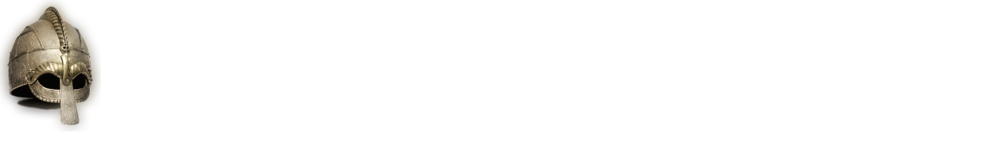
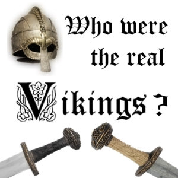
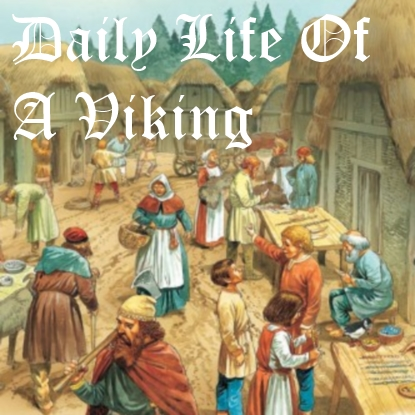
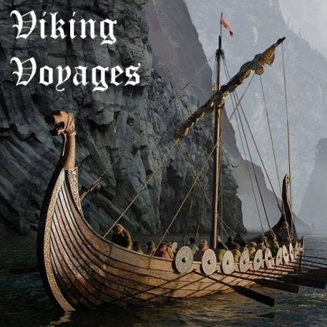
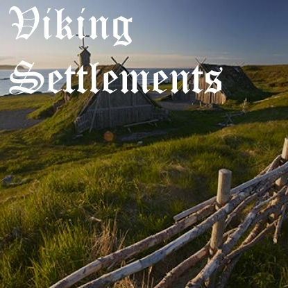
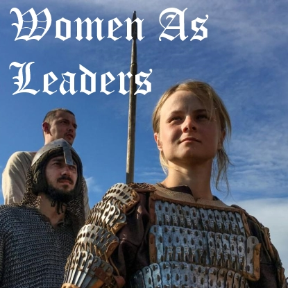
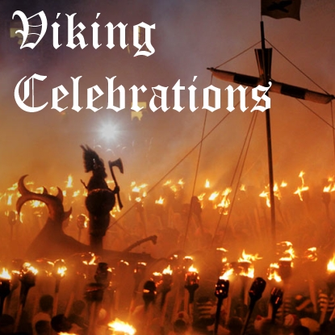

|  |
|  |  |  |
|  |  |  |
Most Vikings were farmers that grew crops such as barley, oats, and rye, and raised cattle, goats, sheep, pigs, chickens, and horses. Some Vikings also worked as fishermen. They used circular, or Trelleborg-style, forts for defense and administrative purposes, and lived in longhouses built of wood, stone, and turf. Salt was vital to the Vikings, usually brought to Scandinavia by travelling merchants. It was used to preserve food so it could be eaten during the long winters. They wore clothing made of wool with silk decorations, or linen. Women sometimes wore brooches that fastened apron straps, and belts from which they hung tools like knives, needles, and shears. Vikings generally wore silver jewelry, so gold pieces would have been considered very valuable. They wore neck rings, dress pins, armbands, and finger rings. High status warriors or Viking elites wore chain mail, and owned double-edged decorated swords that could be more than three feet long. Metal helmets signified high status.
Most ships sailed at approximately 3 to 6 knots. One knot is about one nautical mile, which is equal to approx. 1.8 kilometers. If the wind was blowing in the same direction as they were traveling in, the voyage would take less time. If the winds caused waves that were way too big, the Vikings would have to slow down. Waves could destroy ships or throw people overboard, and bad weather could lead them in the wrong direction causing the voyage to become longer than planned. There were many cases in which Vikings stumbled upon land that they never intended to find, so if they hit land they would follow the coastline all the way to their destination. Their ships ranged anywhere from 45.9ft (14m) to 122.4ft (37.3m) long.
The Vikings were the only European seafarers at that time to travel so far from their homeland. The first big Viking raid took place around A.D. 793 on the island of Lindisfarne. The Vikings also conquered three Anglo-Saxon kingdoms. In later Viking raids, they could have attacked in fleets of 250 ships or more. The word Viking literally means raider, although raiding was not the only thing they did. The Vikings explored what are now 37 countries. They colonized parts of the Scottish Isles, France, Iceland, and Arctic Scandinavia and traveled through the North Atlantic and Russian waterways. They had a colony in Greenland that lasted 500 years, and got all the way to the edge of North America. In fact, the first European person to discover North America may have been a Viking. The first to stumble upon the shores of North America may have been Leif Eriksson, or Leif the Lucky, not Columbus. The only site in the New World that archeologists are certain is a Viking settlement is called L’Anse aux Meadows, a site discovered in the 1960s in northern Newfoundland. In 2015, archeologists found another potential Viking settlement on a peninsula in the south of Newfoundland that stretches out into the Gulf of St. Lawrence. It is called Point Rosee.
Let’s face it, you wouldn’t think of Vikings as the kind of people who would let a woman fight alongside the men. One early tenth-century Irish text tells of a woman called Inghen Ruaidh, or Red Girl, named after the colour of her hair. She was a female warrior who led a Viking fleet to Ireland in the 10th century. In the Viking trading center of Birka, Sweden, archeologists examined the remains of a Viking warrior that had buried with a multitude of weapons. They expected to find that the warrior was male, but the grave belonged to a woman. Numerous Viking sagas tell of shield-maidens fighting the same battles as male warriors, and hint that warriors were not all men.